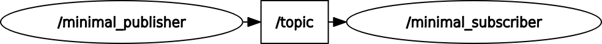

Pythonによるpub/sub通信#
パッケージの作成#
すべてのROS2ノードはパッケージに属している必要があります。ros2 launchやros2 runコマンド等でROS2ノードを起動する際には必ずパッケージ名が必要になります。
本教材で出来上がるコードはこちらのリポジトリに収録しています。参考にしてみてください。
また、コードの詳細な解説はコードのコメントに残してあります。ぜひご参照ください。
ros2 pkg createコマンドを使用し、実際にパッケージを作ってみましょう。
# ワークスペースのディレクトリとその配下にパッケージのソースコードを置くディレクトリを作成
mkdir -p /home/ubuntu/Desktop/colcon_ws/src/ros_handson_packages
# ソースコードを置くディレクトリに移動
cd /home/ubuntu/Desktop/colcon_ws/src/ros_handson_packages
# ros2 pkg createコマンドを使用してパッケージを作成する
## --dependenciesオプションは依存するパッケージを指定できます。
## --build-typeオプションはビルドの仕方を指定します。デフォルトはament_cmakeなのでこれを忘れるとC++のパッケージが作られます。
## --licenseオプションはライセンスを指定します。なんらかの論文などのコードを公開するときにはライセンスがついていると親切です。
ros2 pkg create python_tutorial --dependencies rclpy --build-type ament_python --license Apache-2.0
--dependenciesオプションは依存関係を追加し、結果はpackage.xmlに反映されます。
ROSのビルドシステムであるcolconはpackage.xmlの依存を確認してビルド順を制御、適切に環境を構築していきます。
--licenseオプションはライセンスを設定します。
ライセンス？どうでもいいじゃんと思うかもしれませんが、ライセンスの書いていないソフトウェアは公開されていたとしても、使っていいかの判断が付きません。
ちゃんと設定して他の人から使ってもらえるパッケージを作りましょう。
setup.pyの編集#
つぎにsetup.pyを一部修正します。
/home/ubuntu/Desktop/colcon_ws/src/ros_handson_packages/python_tutorial/setup.pyを下記のように書き換えてください。
# setuptoolsのfind_packages関数、setup関数を使えるようにする
from setuptools import find_packages, setup
# osパッケージに含まれる関数群を使用可能にする
import os
# globパッケージからglob関数を使用可能にする
from glob import glob
package_name = 'python_tutorial'
setup(
# パッケージ名を指定
name=package_name,
# パッケージのバージョンを指定
version='0.0.0',
# pythonのパッケージディレクトリを指定、testはテストコードを入れておくディレクトリなので除外する。
packages=find_packages(exclude=['test']),
data_files=[
# 追加データなどを入れるリソースディレクトリを指定
('share/ament_index/resource_index/packages',
['resource/' + package_name]),
# package.xmlというパッケージの依存を管理するファイルをインストール
('share/' + package_name, ['package.xml']),
# Launch関連をインストールするためにリストアップ
(os.path.join('share', package_name), glob('./launch/*.launch.xml')),
],
# setuptoolsを使ってこのパッケージをインストールすることを指定
install_requires=['setuptools'],
zip_safe=True,
# パッケージのメンテナ（動かないときに連絡窓口になるひと）の名前
maintainer='Masaya Kataoka',
# メンテナーの連絡先
maintainer_email='ms.kataoka@gmail.com',
# パッケージの説明
description='Python tutorial package for ROS 2.',
# パッケージのライセンスを指定
license='Apache-2.0',
# 単体テストのため依存を追加
tests_require=['pytest'],
# ros2 runコマンドやros2 launchコマンドでノードを起動できるようにするための設定。
# ここを忘れていると実行ができません。
entry_points={
'console_scripts': [
'publish = python_tutorial.publish:main',
'subscribe = python_tutorial.subscribe:main'
],
},
)
publish.pyを追加#
次に/home/ubuntu/Desktop/colcon_ws/src/ros_handson_packages/python_tutorial/python_tutorial/publish.py
を作成して、以下のように書き込みます。
# Copyright 2016 Open Source Robotics Foundation, Inc.
#
# Licensed under the Apache License, Version 2.0 (the "License");
# you may not use this file except in compliance with the License.
# You may obtain a copy of the License at
#
# http://www.apache.org/licenses/LICENSE-2.0
#
# Unless required by applicable law or agreed to in writing, software
# distributed under the License is distributed on an "AS IS" BASIS,
# WITHOUT WARRANTIES OR CONDITIONS OF ANY KIND, either express or implied.
# See the License for the specific language governing permissions and
# limitations under the License.
# こちらのサンプルコードはこちら（https://github.com/ros2/examples/blob/rolling/rclpy/topics/minimal_publisher/examples_rclpy_minimal_publisher/publisher_member_function.py）からライセンスを確認の上拝借しています。
# rclpy (ROS 2のpythonクライアント)の機能を使えるようにします。
import rclpy
# rclpy (ROS 2のpythonクライアント)の機能のうちNodeを簡単に使えるようにします。こう書いていない場合、Nodeではなくrclpy.node.Nodeと書く必要があります。
from rclpy.node import Node
# ROS 2の文字列型を使えるようにimport
from std_msgs.msg import String
# C++と同じく、Node型を継承します。
class MinimalPublisher(Node):
# コンストラクタです、MinimulPublisherクラスのインスタンスを作成する際に呼び出されます。
def __init__(self):
# 継承元のクラスを初期化します。（https://www.python-izm.com/advanced/class_extend/）今回の場合継承するクラスはNodeになります。
super().__init__('minimal_publisher')
# publisherを作成します。self.と頭についていますが、これはself.publisherがメンバー変数であることを表しています。
self.publisher_ = self.create_publisher(
# String型のデータを受信することを示します。
String,
# topicという名前のtopicにデータを送信します。
'topic',
# MessageのBuffer Sizeです。基本的には1で問題ありません。
10)
timer_period = 0.5 # seconds
# タイマーを作成、一定時間ごとにコールバックを実行できるように設定
self.timer = self.create_timer(timer_period, self.timer_callback)
self.i = 0
# タイマーによって実行されるコールバック
def timer_callback(self):
# 文字列型のインスタンスを作成します、この変数はローカル変数のため、コールバックの外からはアクセスできません。
msg = String()
# Stringのメッセージ型の変数に文字列を代入
msg.data = 'Hello World: %d' % self.i
# Publisher経由でメッセージを発行
self.publisher_.publish(msg)
# Loggerでterminalにログを出力
self.get_logger().info('Publishing: "%s"' % msg.data)
# self.iというメンバ変数をカウントアップする。
self.i += 1
# mainという名前の関数です。C++のmain関数とは異なり、これは処理の開始地点ではありません。
def main(args=None):
# rclpyの初期化処理です。ノードを立ち上げる前に実装する必要があります。
rclpy.init(args=args)
# MinimalPublisherクラスのインスタンスを作成
minimal_publisher = MinimalPublisher()
# spin処理を実行、spinをしていないとROS 2のノードはデータを入出力することが出来ません。
rclpy.spin(minimal_publisher)
# 明示的にノードの終了処理を行います。
minimal_publisher.destroy_node()
# rclpyの終了処理、これがないと適切にノードが破棄されないため様々な不具合が起こります。
rclpy.shutdown()
# 本スクリプト(publish.py)の処理の開始地点です。
if __name__ == '__main__':
# 関数`main`を実行する。
main()
subscribe.pyを追加#
次に/home/ubuntu/Desktop/colcon_ws/src/ros_handson_packages/python_tutorial/python_tutorial/subscribe.py
を作成して、以下のように書き込みます。
# Copyright 2016 Open Source Robotics Foundation, Inc.
#
# Licensed under the Apache License, Version 2.0 (the "License");
# you may not use this file except in compliance with the License.
# You may obtain a copy of the License at
#
# http://www.apache.org/licenses/LICENSE-2.0
#
# Unless required by applicable law or agreed to in writing, software
# distributed under the License is distributed on an "AS IS" BASIS,
# WITHOUT WARRANTIES OR CONDITIONS OF ANY KIND, either express or implied.
# See the License for the specific language governing permissions and
# limitations under the License.
# こちらのサンプルコードはこちら（https://github.com/ros2/examples/blob/rolling/rclpy/topics/minimal_subscriber/examples_rclpy_minimal_subscriber/subscriber_member_function.py）からライセンスを確認の上拝借しています。
# rclpy (ROS 2のpythonクライアント)の機能を使えるようにします。
import rclpy
# rclpy (ROS 2のpythonクライアント)の機能のうちNodeを簡単に使えるようにします。こう書いていない場合、Nodeではなくrclpy.node.Nodeと書く必要があります。
from rclpy.node import Node
# ROS 2の文字列型を使えるようにimport
from std_msgs.msg import String
# C++と同じく、Node型を継承します。
class MinimalSubscriber(Node):
# コンストラクタです、MinimalSubscriberクラスのインスタンスを作成する際に呼び出されます。
def __init__(self):
# 継承元のクラスを初期化します。（https://www.python-izm.com/advanced/class_extend/）今回の場合継承するクラスはNodeになります。
super().__init__('minimal_subscriber')
# Subscriptionを作成、Publishしたデータを受け取ることが出来るようにします。
self.subscription = self.create_subscription(
# String型を
String,
# topicという名前のtopicをsubscribeします。
'topic',
# topicという名前のtopicに新しいデータが来たときにlistener_callbackを実行します。selfがついているのはlistener_callbackがメンバー変数であることを示しています。
self.listener_callback,
# メッセージの受信キューのサイズ
10)
self.subscription # 警告を回避するために設置されているだけです。削除しても挙動はかわりません。
# メッセージを受け取ったときに実行されるコールバック関数
def listener_callback(self, msg):
# loggerを使ってterminalに文字列を出力する。
self.get_logger().info('I heard: "%s"' % msg.data)
# mainという名前の関数です。C++のmain関数とは異なり、これは処理の開始地点ではありません。
def main(args=None):
# rclpyの初期化処理です。ノードを立ち上げる前に実装する必要があります。
rclpy.init(args=args)
# MinimalSubscriberクラスのインスタンスを作成
minimal_subscriber = MinimalSubscriber()
# spin処理を実行、spinをしていないとROS 2のノードはデータを入出力することが出来ません。
rclpy.spin(minimal_subscriber)
# 明示的にノードの終了処理を行います。
minimal_subscriber.destroy_node()
# rclpyの終了処理、これがないと適切にノードが破棄されないため様々な不具合が起こります。
rclpy.shutdown()
# 本スクリプト(publish.py)の処理の開始地点です。
if __name__ == '__main__':
# 関数`main`を実行する。
main()
launchファイルの追加#
まず、下記のコマンドを実行し、launchファイルを保管するディレクトリとlaunchファイルを作成します。
mkdir -p /home/ubuntu/Desktop/colcon_ws/src/ros_handson_packages/python_tutorial/launch
# touchコマンドを使用して空のファイルを作成
touch /home/ubuntu/Desktop/colcon_ws/src/ros_handson_packages/python_tutorial/launch/pub_sub.launch.xml
次に、/home/ubuntu/Desktop/colcon_ws/src/ros_handson_packages/python_tutorial/launch/pub_sub.launch.xmlパッケージを下記のように変更します。
<launch>
<node name="publish" pkg="python_tutorial" exec="publish"/>
<node name="subscribe" pkg="python_tutorial" exec="subscribe"/>
</launch>
このようにlaunchファイルでは、どのパッケージのどのノードを何という名前で立ち上げるか、を設定します。
パッケージのインストール#
pythonは動的型付言語であり、コマンドはcolcon buildを使用しますが実質的にはファイルを適切な場所にコピーするインストールの作業をします。
下記のコマンドを実行し、パッケージのインストール作業を行なってください。
# workspaceのルートディレクトリに移動
cd /home/ubuntu/Desktop/colcon_ws
# colcon buildコマンドでpython_tutorialパッケージをインストール
## --symlink-installオプションでファイルをコピーするのではなくシンボリックリンクでインストールするように
colcon build --symlink-install
ros2 runコマンドによるノードの実行#
これでノードを実行する準備が整いました。それでは以下のコマンドを立ち上げて作ったROS 2ノードを実行していきましょう。
source /home/ubuntu/Desktop/colcon_ws/install/local_setup.bash
ros2 run python_tutorial subscribe
これでsubscribeノードが起動しました。 もう1つターミナルを立ち上げます。
source /home/ubuntu/Desktop/colcon_ws/install/local_setup.bash
ros2 run python_tutorial publish
２つのコマンドを実行すると、ros2 run python_tutorial subscribeを実行したターミナルからは下記のような出力が得られます。
[INFO] [1694838910.442890102] [minimal_subscriber]: I heard: "Hello World: 0"
[INFO] [1694838910.931468850] [minimal_subscriber]: I heard: "Hello World: 1"
[INFO] [1694838911.431145869] [minimal_subscriber]: I heard: "Hello World: 2"
[INFO] [1694838911.931120617] [minimal_subscriber]: I heard: "Hello World: 3"
[INFO] [1694838912.431568172] [minimal_subscriber]: I heard: "Hello World: 4"
ros2 run python_tutorial publishを実行したターミナルからは下記のような出力が得られます。
[INFO] [1694838910.442878124] [minimal_publisher]: Publishing: "Hello World: 0"
[INFO] [1694838910.930593434] [minimal_publisher]: Publishing: "Hello World: 1"
[INFO] [1694838911.430503775] [minimal_publisher]: Publishing: "Hello World: 2"
[INFO] [1694838911.930529540] [minimal_publisher]: Publishing: "Hello World: 3"
[INFO] [1694838912.430752928] [minimal_publisher]: Publishing: "Hello World: 4"
それぞれ得られます。
このとき、別なターミナルを立ち上げてrqt_graphコマンドを入力すると以下のような表示が得られます。

このように２つのノードがtopicという名称のトピックで接続されていることが可視化されました。
実行を中止するときにはctrl+cを押しましょう。
ros2 launchによる複数ノードの一括実行#
大規模なロボットシステムを組む際には、このノードが100を超えることも珍しくありません。
それを毎回ros2 runコマンドで行なうのは非現実的です。
一括実行を行なうためにROS 2はros2 launchというコマンドを用意しています。
ros2 launchコマンドで複数のノードを実行するためには以下のコマンドを実行してください。
source /home/ubuntu/Desktop/colcon_ws/install/local_setup.bash
ros2 launch python_tutorial pub_sub.launch.xml
このコマンドを実行すると下記のような出力が得られます。
[INFO] [launch]: All log files can be found below /home/masaya/.ros/log/2023-09-16-13-46-00-526840-masaya-GF63-8RD-114645
[INFO] [launch]: Default logging verbosity is set to INFO
[INFO] [publish-1]: process started with pid [114646]
[INFO] [subscribe-2]: process started with pid [114648]
[publish-1] [INFO] [1694839561.387494402] [publish]: Publishing: "Hello World: 0"
[subscribe-2] [INFO] [1694839561.387816633] [subscribe]: I heard: "Hello World: 0"
[publish-1] [INFO] [1694839561.877359255] [publish]: Publishing: "Hello World: 1"
[subscribe-2] [INFO] [1694839561.877986526] [subscribe]: I heard: "Hello World: 1"
[publish-1] [INFO] [1694839562.375782075] [publish]: Publishing: "Hello World: 2"
[subscribe-2] [INFO] [1694839562.376012771] [subscribe]: I heard: "Hello World: 2"
また、このコマンド実行中に別ターミナルを立ち上げます。
rqt_graph
を実行すると下記のような出力が得られます。
このようにすることで、複数のノードを一括実行できます。
実行を終了するときはros2 runコマンドのときと同様にctrl+cで終了指示をだしてください。